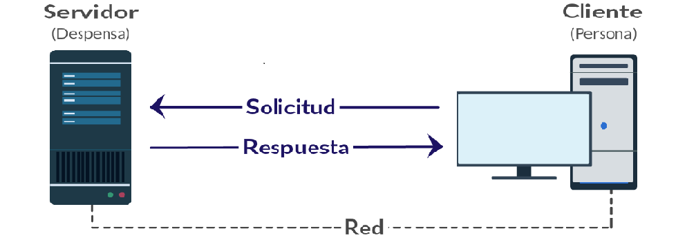

Paso 3: El Servidor procesa la Solicitud
El servidor (Apache, Nginx, etc.) recibe la petición, comprueba si el recurso existe, y retorna un código de estado que informa al navegador sobre el resultado de la gestión.

Códigos de Estado Comunes
- 200 OK: La solicitud ha tenido éxito y el recurso se envía.
- 404 Not Found: El servidor no pudo encontrar el recurso solicitado.
- 500 Internal Server Error: El servidor encontró una condición inesperada.
Ejemplo de Encabezado de Respuesta
| Línea de Cabecera | Significado |
|---|---|
HTTP/1.1 200 OK |
Protocolo y estado exitoso. |
Content-Type: text/html; charset=UTF-8 |
Formato de datos devuelto. |